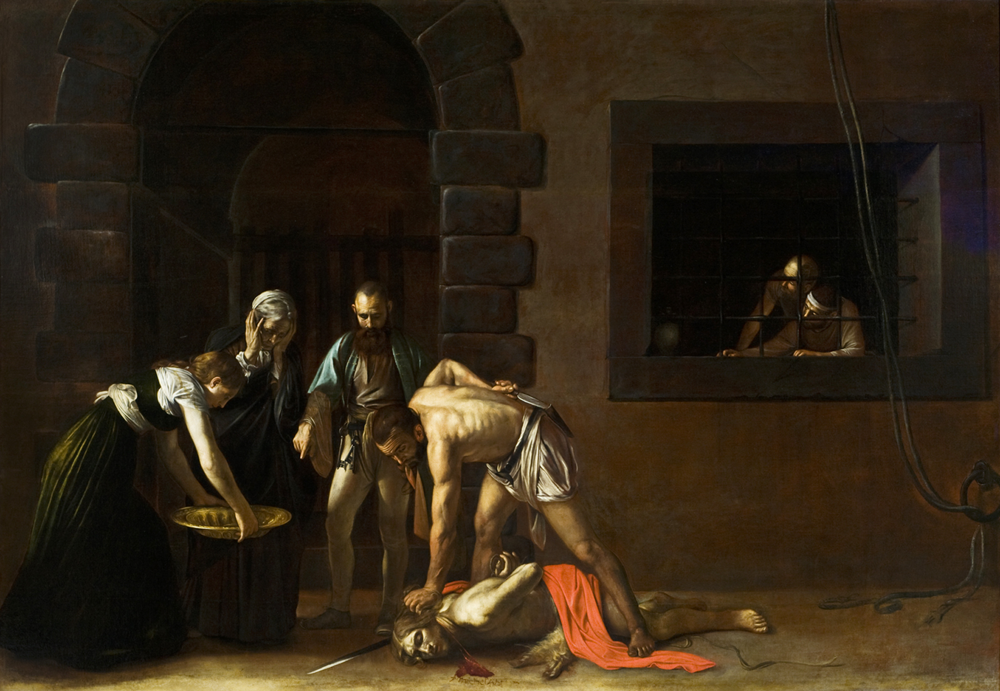

AS 15 OBRAS MAIS FAMOSOS DO BARROCO
As obras barrocas mais famosas da história: de Caravaggio a Bernini, de Velázquez a Vermeer — uma seleção das criações mais icônicas desse estilo artístico que marcou época.
O período Barroco (séculos XVII e XVIII) foi marcado por emoção intensa, contrastes dramáticos de luz e sombra,
e
uma busca constante por envolver o espectador. Com fortes raízes religiosas e políticas, essa era deu origem a
obras monumentais que até hoje nos impressionam pela técnica e grandiosidade.
De Caravaggio a Rubens, de Bernini a Velázquez, reunimos aqui 15 obras barrocas inesquecíveis que
ajudaram a
definir a arte ocidental.
AS OBRAS MAIS FAMOSAS DO BARROCO
1. A Vocação de São Mateus — Caravaggio (1599–1600)
Local: Igreja de San Luigi dei Francesi, Roma Com seu uso revolucionário de luz e sombra (chiaroscuro), Caravaggio transforma um momento bíblico em uma cena realista e intensa, como se estivesse acontecendo em um bar romano.
2. O Êxtase de Santa Teresa — Gian Lorenzo Bernini (1647–1652)
Local: Igreja de Santa Maria della Vittoria, Roma Uma das esculturas mais icônicas do Barroco, combina emoção intensa, teatralidade e domínio técnico impressionante do mármore.
3. Judite Decapitando Holofernes — Artemisia Gentileschi (c. 1620)

Local: Galeria Uffizi, Florença Uma obra poderosa e dramática, que mostra Judite com força e determinação — um verdadeiro manifesto visual feminino no século XVII.
4. A Conversão de São Paulo — Caravaggio (1601)
Local: Igreja de Santa Maria del Popolo, Roma Com iluminação teatral, Caravaggio captura o momento exato da revelação divina, transformando a cena em puro impacto visual.
5. A Rendição de Breda — Diego Velázquez (1634–1635)
Local: Museu do Prado, Madri Uma pintura histórica que mistura realismo e grandeza, retratando a entrega das chaves da cidade com surpreendente humanidade.
6. O Rapto das Filhas de Leucipo — Peter Paul Rubens (1617)

Local: Alte Pinakothek, Munique Cheia de movimento, sensualidade e músculos tensionados — uma cena mitológica com a energia vibrante típica de Rubens.
7. A Alegoria da Pintura — Johannes Vermeer (c. 1666–1668)
Local: Kunsthistorisches Museum, Viena Uma visão quase íntima do ato de pintar, onde luz e composição criam uma atmosfera silenciosa e encantadora.
8. O Triunfo do Nome de Jesus — Giovanni Battista Gaulli (1672–1685)
Local: Igreja do Gesù, Roma Um teto que parece explodir em luz divina — a ilusão de profundidade é tão impressionante que parece que o céu se abriu.
9. David — Gian Lorenzo Bernini (1623–1624)

Local: Galleria Borghese, Roma Ao contrário das versões clássicas, Bernini mostra David no meio da ação, pronto para lançar a pedra — puro dinamismo barroco.
10. O Martírio de São Filipe — Jusepe de Ribera (1639)
Local: Museu do Prado, Madri Uma cena forte e realista, com corpos torcidos e expressões intensas, típica do tenebrismo espanhol.
11. Auto-retrato — Rembrandt van Rijn (c. 1659)

Local: National Gallery of Art, Washington Rembrandt revela emoção e introspecção como poucos artistas — cada ruga conta uma história.
12. As Meninas — Diego Velázquez (1656)
Local: Museu do Prado, Madri Uma das pinturas mais enigmáticas do Barroco, cheia de camadas, reflexos e olhares que fazem o espectador parte da cena.
13. A Morte da Virgem — Caravaggio (1606)
Local: Museu do Louvre, Paris Chocou o público da época por retratar Maria com realismo cru, como uma mulher comum — um gesto ousado para o período.
14. Apolo e Dafne — Gian Lorenzo Bernini (1622–1625)

Local: Galleria Borghese, Roma Uma cena congelada no instante da transformação — Dafne vira árvore enquanto foge de Apolo, e o mármore parece ganhar vida.
15. O Milagre de Santo Inácio — Andrea Pozzo (1691–1694)

Local: Igreja de Santo Inácio, Roma Pozzo transforma o teto em um céu infinito com sua incrível técnica de perspectiva — um verdadeiro espetáculo visual barroco.